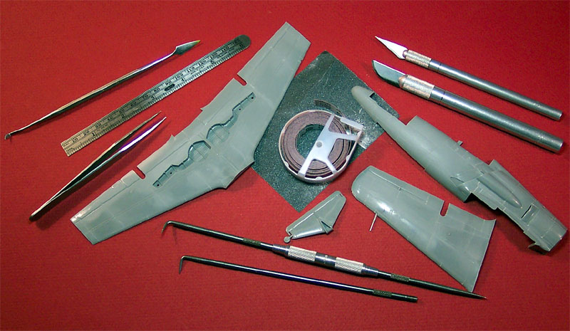
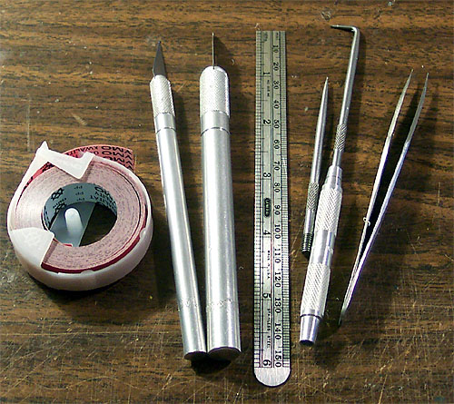
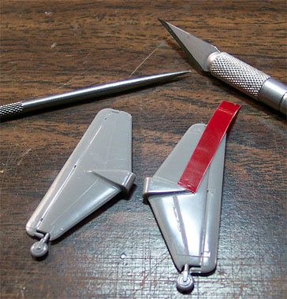
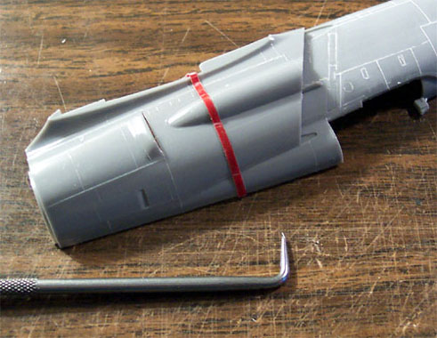
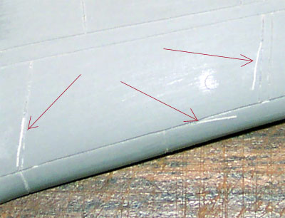
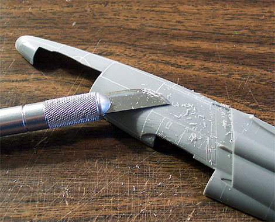
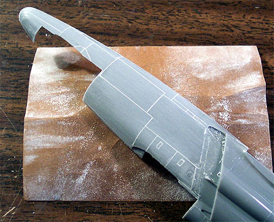
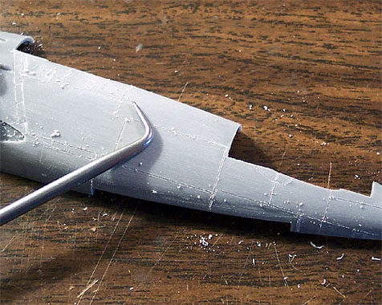
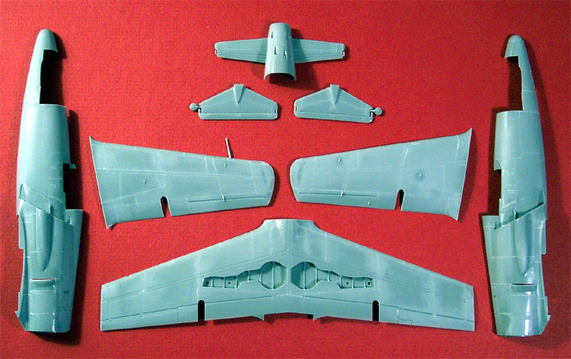

The revival of a lost art, a systematic approach to scribing

Images, text and model Copyright � 2004 by Matt Swan
Back in the seventies when plastic modeling was experiencing it�s first growth boom the state of the art model featured raised panel lines and other raised surface details. Matchbox, Supermodel, Lindberg, Airfix, Revell and Monogram when they were competitors and even early Hasegawa kits all featured finely raised panel lines as well as many other manufactures that no longer exist. Over the intervening years some of these model manufactures have fallen by the wayside and their kits are no longer readily available while others had their molds acquired by surviving manufactures and are still in production. Some of the first kits to appear with recessed panel lines were the 1/48 kits from Otaki , Nichimo & Fujimi. They caused quite a stir in their day, and other manufacturers soon jumped on the competitive bandwagon. There are cases where a raised panel line is appropriate like on a B-17 or B-24 or even a FM Wildcat but on others like the 1/72 B-36 and 1/48 B-58 Hustle from Revell-Monogram these raised lines are totally inappropriate and unrealistic. For those of us that go back to the early kits of the 60's-70's & early 80's, scribing was just a normal part of any build if you didn't like raised panel lines.
I guess it has become sort of a lost art since most of the kits produced over the last several years come with recessed panel lines. Scribing a model can appear to be a very daunting project. I mean, just look at all those lines! Where do you start? Do you even have the capability to finish something of this scale? It�s a very scary thing and it was very scary to me until I finally threw caution to the winds and jumped in. Now days there�s all the aftermarket resin & PE so you can super detail to the limit of your wallet. But perhaps some of the very basic modeling skills like scribing have deteriorated as a result. Come share a journey with me and see how to scribe a model and preserve your sanity in the process.

There is no reason to fear this project, do not look at all those lines and panels but just one line at a time � that�s all it is, one line at a time. To begin we need to gather a few tools and supplies; this is what we will need,
1.
A scribing tool. I bought a steel scribe at the local hardware store for six bucks but you could work with a sewing needle in a pin vise.
2.
Dymo tape, this is that colored tape that you can buy in any office supply store that is used in label makers. This stuff is key to the project. It has enough structure to act as a guide for your scribe and can handle compound curves found on most fuselages.
3.
A flexible steel rule. I am using a six-inch flexible steel ruler purchased from the local hardware store. You can also find these in most office supply stores.
4.
A couple of Xacto knives. I am using a #1 knife with a #11 blade and a #2 knife with a curved blade. That curved blade will come in very handy as the project progresses.
5.
A pair of fine tweezers. I am using a set of electronics tweezers purchased from ENCO Tools.
6.
A few other items that will come in handy and should be in any modelers toolbox are a tube of Squadron White putty, some good quality cotton swabs, a bottle of acetone based fingernail polish remover, A few sheets of various fine grade sandpaper, a good quality tack cloth and a small potters trowel for applying and smoothing putty. One other item that may be of use, especially if you have a lot of odd curves, is a set of French curves. I did not need that for this particular project. Once these items are gathered we are ready to begin.
Before we begin there is one last item to deal with � your mind set. We will take this one line at a time. We will not be looking at the entire model and being overcome by the scope of the project. One line at a time, that�s all. With that said let us pick a starting point. The kit I am working on is a Hasegawa J7W1 Shinden. This is the first time for me also so I am selecting an area that will not be highly visible just in case I screw up. To start I am working on the lower rudder area. First I cut a short length of Dymo tape off the roll, about 1 and � inch in length and stick it to the rudder surface with one edge tracking right along a raised panel line. I press the tape down securely then take the scribe in hand. Very lightly I draw the tip of the scribe down the length of the tape. Be careful that you do not go beyond the end of the raised line with your scribe. I make three or four passes with the scribe applying just a little more pressure each time. After the first or second pass a slight groove will begin to form and the scribe will want to track right down it. By the forth pass I have opened up a fairly nice groove and have removed the tape. Line by line I work across the rudder getting about four or five uses out of a piece of tape before I have to cut a new length.
After scribing a few lines I realize I do not need to use the entire width of the tape and start using my steel ruler as a guide to slice my tape into thinner strips. This comes in handy for some lines that run alongside raised structures on the aircraft and is useful on the fuselage as well. For larger flat surfaces like on the wings I simply hold my steel ruler onto the plastic as my guide and trace the line with the scribe tip. After the line has been scribed there will be a degree of plastic sitting proud of the surface and maybe even some remnants of the original raised line, don�t worry about these as we will take care of them shortly. Below are two pictures of the progress so far, to the left is the rudder I am working on and to the right is part of the fuselage.
 
So far we have been working with lines long enough to place a piece of tape on or hold the ruler over but what about the little details like the hinge areas on the rudder? I take my #11 Xacto blade and trace the short little line very lightly. Just like when I was working with the scribe I make about four passes adding just a little pressure each time. I am just creating a thin groove alongside the raised line. Once this is done I go back with my scribe and gently open up that line. For some of the short lines that are near an edge I will use the curved blade, placing the tip on the end of the line then rocking the blade down while applying pressure to create the slit along the raised line. Regardless of which blade you use the key point is to create that slit for the scribe to follow. Remember to take your time and move slowly, patience is a virtue, right?

In theory all of this will go just fine but in reality hands shake and scribes move off line creating mistakes. It happens, but it can be easily fixed. If you should move off your line and scribe a random mark simply take a very small amount of Squadron White putty and trowel it into the mistake. Using a cotton swab dipped in acetone based fingernail polish remover smooth out the putty and let it dry. You can sand it smooth and clean any portion of the correct line with your scribe. In the picture to the right you can see three different areas where I had just that problem.
Alright, moving right along we need to begin to clean up our freshly scribed lines. Once you have completed a piece of the model take your #2 Xacto knife and scrape the edge of the blade across the scribed lines removing any material that is proud (raised above) of the surface. When you do this it will look like your line is getting filled in but not to worry. Work over the entire piece in this manner then get your sandpaper out and sand this scribed areas. Below you can see this process, to the left the part has had the lines scraped with the razor knife and to the right it has been sanded. At this point the lines show up nicely as they are now filled with sanding debris.
I know this may sound like a lot of work but once you get going on the project time will fly and before you know it the pieces in the done pile will outnumber the pieces yet to be completed. We are very nearly done here.
 

The hard work is all done now. The next task is to take your scribe and retrace the lines to clean out the sanding debris. You may find it necessary to resand some areas lightly and trace the lines one last time. At no point in the retracing do you want to apply a lot of pressure to the scribing tool as this will raise more plastic and require another round of sanding. Once all the lines have been cleaned out it is time to wash the parts. There has been a lot of handling going on and probably quite a bit of plastic debris still stuck in corners so it is advisable to give all the parts a good wash in warm soapy water. Rinse them off and pat dry with a soft cotton towel. I like to go over it with a Micro Sheen tack cloth just to make sure that everything is off the plastic and that no lint has been left behind.
There it is, we are done, the model has been scribed and this entire project took approximately ten hours to complete. Now all we have to do is clean up all these little plastic shavings that are all over the modeling desk.
If you would like to see how this all turns out here is a link to this model built.
